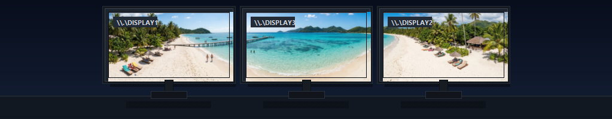

Descarga actual de Windows
Obtener el ejecutable empaquetado desde GitHub.
Descargue WallCraft Pro 2026.11.8 para Windows 10/11. El ejecutable se compila desde el código fuente público y se publica en GitHub Releases.
Descarga la build de Windows, abre el código fuente o revisa GitHub Releases.
Obtener el ejecutable empaquetado desde GitHub.
Inspeccionar el repositorio o compilar desde la fuente.
Abrir la página pública de releases y seguir futuras versiones.
Revisa la interfaz renovada antes de descargar la aplicación.

Proyecto, layout, modos de edición, escenario y salida estan mejor organizados.
La nueva vista previa ayuda a validar la composición con más rapidez.

Monitores oscuros y mejor espaciados hacen la lectura más inmediata.
Continua con la guía de funcionamiento, los casos de uso o la FAQ.
Descubre cómo WallCraft Pro importa imágenes, las escala manualmente y previsualiza el resultado multi-monitor antes de aplicarlo.
Ejemplos reales de uso de WallCraft Pro con portátiles, pantallas verticales y estaciones de trabajo con varios monitores.
Preguntas frecuentes sobre WallCraft Pro, el generador de fondos de pantalla para varios monitores.
Comparativa de WallCraft Pro con Windows, Wallpaper Engine y DisplayFusion para configuraciones multi-monitor.
Descarga la build actual, prueba tu disposición de monitores y deja el repositorio de GitHub a mano para actualizaciones y código fuente.